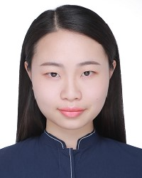

Yun Ren
Info
| Degree | Master | Date of Enrollment | 2015 |
| yunren@buaa.edu.cn | Work Unit | Tencent Company, Shengzhen | |
| Interest Fields | Image/Video Saliency detection | ||
| Address | MC2 Lab, Beihang University | ||
Yun Ren received the bachelor’s degree in Beihang University, Beijing, China, in 2015, where she is currently pursuing the Master degree. She is admitted and expected to receive the Master degree in Mar. 2018. During her study, she was also awarded 10 scholarships, including “National Scholarship”, and nearly 20 competition prizes. Her research interests include saliency prediction and video analysis.
Her Publications
-
Shengxi Li, Mai Xu, Yun Ren, and Zulin Wang. "Closed-form optimization on saliency-guided image compression for HEVC-MSP." IEEE Transactions on Multimedia (2017).
| Download PDF | Download Database | -
Yun Ren, Zulin Wang, and Mai Xu. "Learning-Based Saliency Detection of Face Images." IEEE Access 5 (2017): 6502-6514.
| Download PDF | Download Database | Download Code | -
Mai Xu, Yun Ren, Zulin Wang, Jingxian Liu, and Xiaoming Tao. "Saliency detection in face videos: A data-driven approach." IEEE Transactions on Multimedia (2017).
| Download PDF | Download Database | Download Code | -
Yun Ren, Zulin Wang, Mai Xu, Haoyu Dong, and Shengxi Li. "Learning Dynamic GMM for Attention Distribution on Single-face Videos." In Proceedings of the IEEE Conference on Computer Vision and Pattern Recognition Workshops, pp. 29-38. 2017.
| Download PDF | Download Database | Download Code | -
Shengxi Li, Mai Xu, Yun Ren, Chengzhang Ma, and Zulin Wang. "Optimizing subjective quality in hevc-msp: An approximate closed-form image compression approach." In Data Compression Conference (DCC), 2016, pp. 437-446. IEEE, 2016.
| Download PDF | Download Database | -
Mai Xu, Yun Ren, and Zulin Wang. "Learning to predict saliency on face images." In Proceedings of the IEEE International Conference on Computer Vision, pp. 3907-3915. 2015.
| Download PDF | Download Database | Download Code | -
Yun Ren, Mai Xu, Ruihan Pan, and Zulin Wang. "Learning Gaussian mixture model for saliency detection on face images." In 2015 IEEE International Conference on Multimedia and Expo (ICME), pp. 1-6. IEEE, 2015.
| Download PDF |